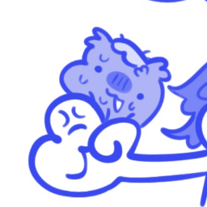

The Creator Team

GeeTee_forSaken
Lead Website Developer & Founder
Hello fellow Dynaballers! I'm an active MC and MCC Island player. I am currently taking the CS Major course and challenging any programming languages to excel. In a meantime i make a website like this for funsies :3

SamplePartner
Wiki Editor & Designer
Dedicated strategy writer and layout helper. Always looking out for the best tactics to launch TNT and secure victory in the arena.